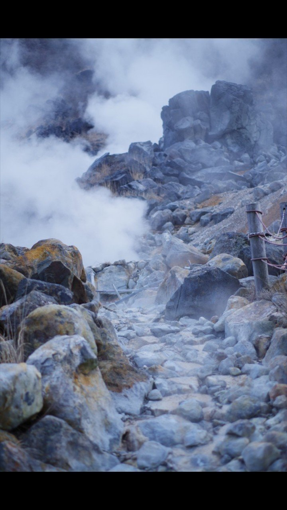

時は前にしか進まないのに、いつも今日は何して生きていただろうと考える。
そんなことで頭がいっぱいになる時は、決まって眠れない夜だ。
布団の中で寝よう、寝なければ明日睡魔に襲われることは分かっているのに、焦りを感じながら寝ようとしても、考え事ばかり先走ってますます頭が冴えてしまう。
むしろ、昼間に机に向かって偉そうに創作にふけっている時なんかよりもよっぽどいい考えが思い浮かぶのだから、余計たちが悪い。尚更眠ることなどできやしない。
だから仕方なしに電気をつけ、メモ帳とペンを引っ張り出し、忘れないように書き留めておく。私はその時、初めて生きている感覚に陥るのだ。
よく晴れた空の下。
「感動をください」
そういう人がいる。
「何て？」
もう一度聞き返すと、
「感動をください」
と繰り返す。
言うのは簡単なことだ。だが、そう思ってしまったら最後、僕は突如として現れた穴の底に突き落とされた。
そこには数多の人々が絵やら演劇やらをしていた。
「あなたたちは？」
そう問うと1人の女が振り返って、
「あら、どなたかしら？ 私たちは創作をしているのよ」
と言った。
「ここに落ちてきたということは、お前もあいつを感動させられなかったか」
別の男が口を挟んだ。
「上に小さな子どもがいただろ？ 俺らはあいつを感動させないと、一生ここから抜け出せないんだ」
「そんなことが」
「嘘のような本当の話さ。絵なり演劇なり、それこそ小説だって人の心を打たなければ意味なんかない。独りよがりのものになってしまうからね」
「もうどれくらいここに？」
「さあ。俺らは老いることより大事なものを見つけてしまったから、時間を気にしたことがないんだ」
僕は漠然と考えた。
何でこの人たちはあの人を感動させたいんだろう。
でも自分には興味がないように思われた。そんなことを訊いてどうする。
まずは自分自身がここから逃れることが先決だ。それこそ時間の無駄になってしまう。
「そんなこと考えたって無駄だよ」
随分と幼い声がした。小さい男の子が立っていた。
「君は？」
その子の目を見て訊く。
「創作者」
「何で僕の心の中が分かる？」
「ここに突き落とされた人間は、外見や建て前には関心がないんだ。本当に知りたいのは、本心同士の会話」
不思議と説得力があった。汚れを知らないそのまっすぐな目から強い意志を感じた。僕はここで創作をすることに決めた。
ところでこの穴にいる人間たちはどんなことを考えているのか。創作する前に手当たり次第、話を聞くことにした。最初は若い夫婦だった。
「感動とは何だと思いますか？」
「心を揺さぶることではないかと考えています。だから、私たちは時に激しく、時に優しくその人の心に問いかけます」
「何を問うのですか？」
「それが分かれば苦労しません」
笑いながらそう答えた。
どうやら彼らは演劇の台詞の言い回しや演技に凝っているようだ。
次に話したのは、かなり年を重ねた男であった。
「あなたは何を？」
男はしばらく黙ってキャンバスを見ていたが、しばらく経っても僕が離れないので、仕方なしに口を開いた様子であった。
「見ての通り、絵を描いておる。ところでお前さん、あんたの心は単純のようで複雑じゃな」
男は初めて僕の目を見た。確かにこちらを見ているが、どこか内面まで見透かしているような目であった。しばらく間があった。
「ここにくる前、色々ありました。これまで物を書き続けていましたが、ある時に書く目的を見失いました。なぜそうなったかは自分でも分かりません」
なぜかその男に本心を話していた。
「そんなことは皆抱えていることじゃ。わしもなぜ今、絵を描いているのか分からん。それはあの子どもを感動させようとするためかもしれんし、わし自身のためかもしれん。でも、描き続けるしかないと思っとる」
「今は何を描いているのですか？」
「それはできてからのお楽しみ、ってやつじゃな」
男はそう言って少しはにかんだ。
何人かの創作者たちと対話して気づいた。感動とは狙って作るものではないと。
必死に生きている人間の人となりをどうしても伝えたい。勝手にそう決め込んで、僕はある小説を書き始めた。
時間は自分の想像以上に早く進み、季節は過ぎていった。そして、ようやくある小説を形にした。
手の中には完成された小説原稿がある。
「感動をください」
「はい」
その人に小説を渡した。汚い原稿用紙に書かれた文字は、不思議と光っていた。
その人はおもむろにその紙を受け取ると、1枚1枚丁寧にその紙に書かれている物語を読んだ。僕はひたすらその様子を見ていた。
どれくらいの時間が過ぎただろう。その人が全て読み終わったのを見て、こう言った。
「人は同じものを見て、違うことを考える。それでいいんじゃないですか」
するとその人に拍手された。
その人は涙をこぼした。
「ありがとう。初めて生きた心地がしたよ」
そう言うと、地蔵のように硬かったその人の表情は、ゆっくりとほぐれていった。